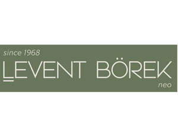

Trade Mark Journal No.2025/035 29 August 2025
UK00004251254 19 August 2025 (30,35,43)

- Class 30
- Coffee, cocoa; coffee or cocoa based beverages, chocolate based beverages; Pasta, flour-based dumplings, noodles; pastries and bakery products based on flour; desserts based on flour and chocolate; bread, pita, sandwiches, pies, cakes; desserts based on dough coated with syrup; puddings, custard, rice pudding; honey, bee glue for human consumption, propolis for food purposes; condiments for foodstuff, vanilla (flavoring), spices, sauces (condiments), tomato sauce; yeast, baking powder; flour, semolina, starch for food; sugar, cube sugar, powdered sugar; tea, iced tea; confectionery, chocolate, biscuits, crackers, wafers; chewing gums; ice-cream, edible ices; salt; cereal-based snack food, popcorn, crushed oats, corn chips, breakfast cereals, processed wheat for human consumption, crushed barley for human consumption, processed oats for human consumption, processed rye for human consumption, rice; molasses for food.
- Class 35
- The bringing together, for the benefit of others, of a variety of goods, namely, coffee, cocoa, coffee or cocoa based beverages, chocolate based beverages, Pasta, flour-based dumplings, noodles, pastries and bakery products based on flour, desserts based on flour and chocolate, bread, pita, sandwiches, pies, cakes, desserts based on dough coated with syrup, puddings, custard, rice pudding, honey, bee glue for human consumption, propolis for food purposes, condiments for foodstuff, vanilla (flavoring), spices, sauces (condiments), tomato sauce, yeast, baking powder, flour, semolina, starch for food, sugar, cube sugar, powdered sugar, tea, iced tea, confectionery, chocolate, biscuits, crackers, wafers, chewing gums, ice-cream, edible ices, salt, cereal-based snack food, popcorn, crushed oats, corn chips, breakfast cereals, processed wheat for human consumption, crushed barley for human consumption, processed oats for human consumption, processed rye for human consumption, rice, molasses for food, enabling customers to conveniently view and purchase those goods, such services may be provided by retail stores, wholesale outlets, by means of electronic media or through mail order catalogues. .
- Class 43
- Services for providing food and drink; temporary accommodation; reservation of temporary accommodation; rental of rooms for wedding ceremonies; providing rooms for conferences and various meetings; medical tourism services in the nature of temporary accommodation reservations in order to obtain health care; day-nurseries (crèches); boarding for animals.
LB BÖREKÇİLİK GIDA SANAYİ TİCARET ANONiM ŞİRKETİ
Representative: DESTEK PATENT LTD